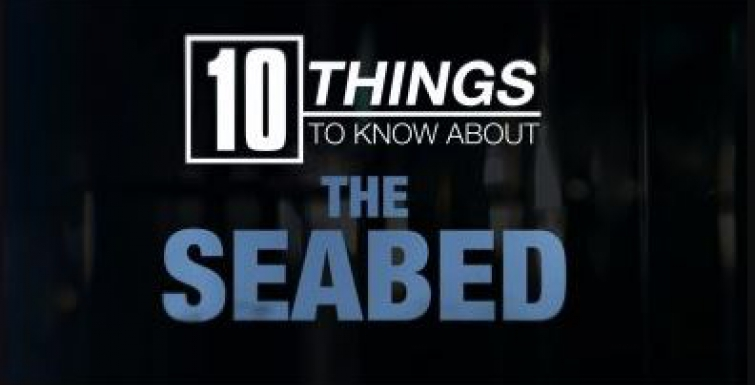
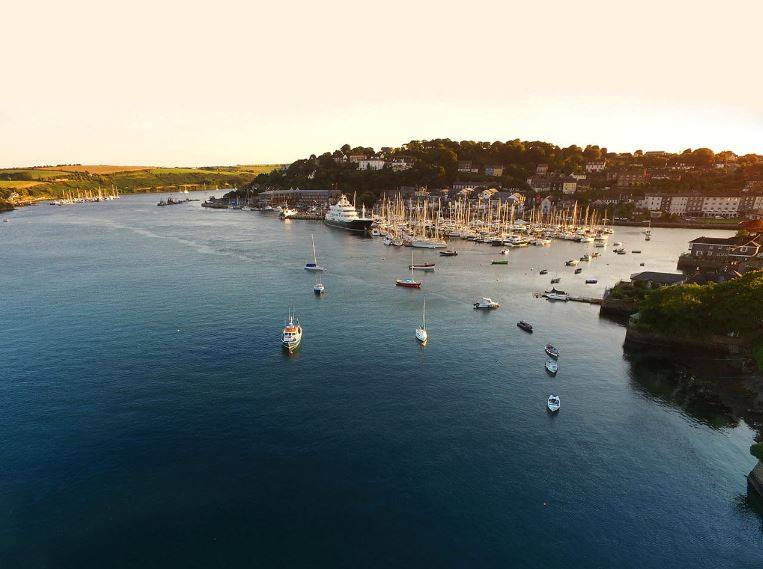

10 Things to Know About ...
SDI, INFOMAR and the GSI featured in the first episode of the new series of 10 Things to Know About… on RTĒ 1, Monday 12 November at 8:30 pm. To coincide with Science Week, the new series of the popular 10 Thing to Know About… started with an episode devoted to the science of the seabed and ocean floor. The episode showed the work of the DCCAE-funded INFOMAR programme jointly run by Geological Survey Ireland (GSI) and the Marine Institute. The episode also explored the role of GSI with the Dublin Institute of Advanced Studies in tsunami warning systems in the Atlantic Ocean.
Catch up the episode on RTE Player (until 12 December 2018).
SDI Annual Seminar 2018
Our 2018 seminar will be held in Kinsale, west Cork on November 8th-9th and hosted at the Trident Hotel. The seminar presents an opportunity to learn about the SDI programme and promises a series of engaging presentations and discussions on the latest in Irish marine research, shipwreck mapping techniques and our survey progress this year in an informal environment.
The seminar is a free open event. Register Here
RMS Leinster 100th Anniversary

October 10th, 2018 marks the Centenary of the sinking of the RMS Leinster. The National Maritime Museum in Dun Laoghaire will host a State Commemoration event to remember those who were lost in Ireland's most tragic maritime disasters.
Check out the National Maritime Museum for more event information.